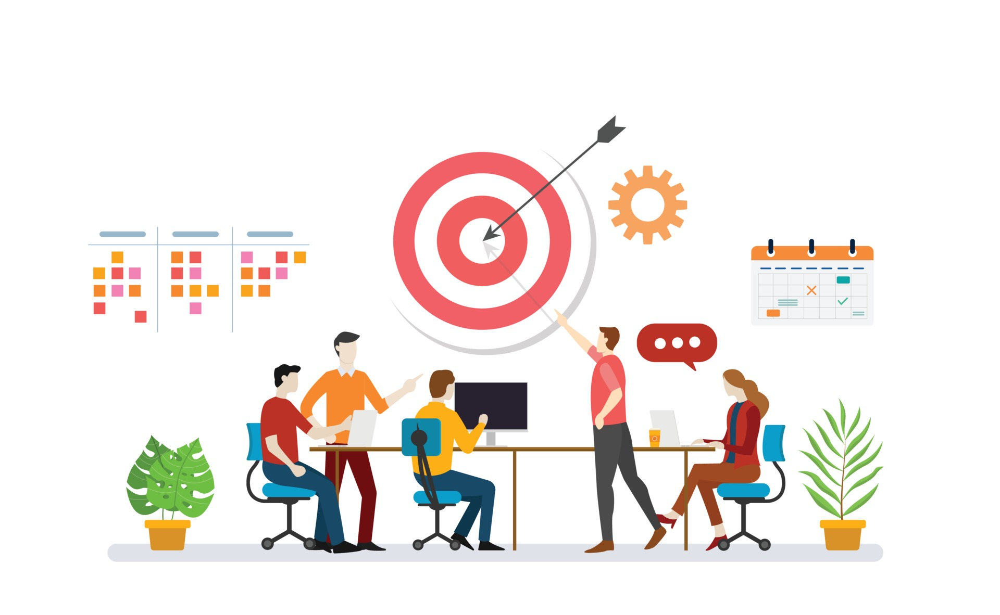
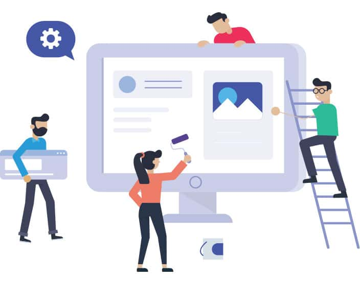
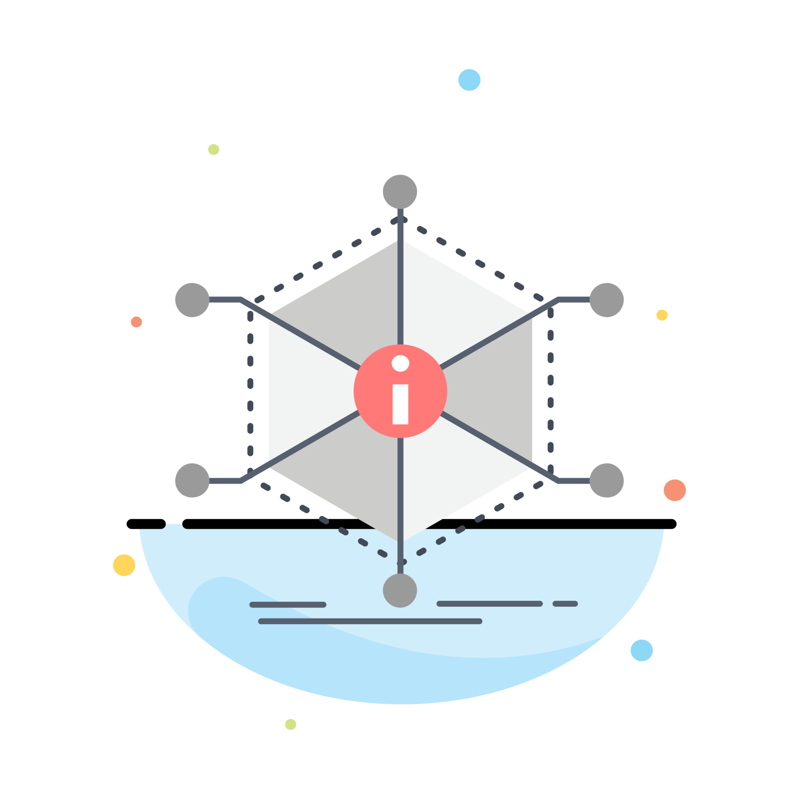

Her Finner du mer om
-

Prosjektledelse og prosjektarbeid
Prosjektledelse krever planlegging, organisering, styring, målstyring, kommunikasjon og evaluering.
-

Webutvikling og UX
Webutvikling og UX fokuserer på design, responsivitet og brukervennlighet.
-

Systemutvikling
Systemutvikling omfatter analyse, design, implementasjon, testing og vedlikehold av programvare.
-

Kilder
Klikk her for å finne og utforske kildene.